第一章 操作系统引论 第二章 进程的描述与控制 第三章 处理机调度与死锁 第四章 进程同步 第五章 存储器管理 第六章 虚拟存储器 第七章 输入/输出系统 第八章 文件管理 第九章 磁盘存储器管理
常规存储管理共同特点--要求把进程全部装入内存才能运行
两种解决方案
虚拟存储管理要研究的问题
程序的局部性原理：指程序在执行过程中的一个较短时间内，所执行的指令地址或操作数地址分别局限于一定的存储区域中。
时间局部性：程序的循环操作导致指令、数据的重复执行、访问 空间局部性：程序的顺序执行导致某段时间访问地址集中在一定范围
虚拟存储器是指具有请求调入功能和置换功能，能从逻辑上对内存容量进行扩充的一种存储系统。虚存的实质：以时间换空间，但时间牺牲不大。
基本思想：
虚拟存储器的实现方法：
基本原理：在请求分页式存储管理系统中，进程运行之前将一部分页面装入内存，另外一部分页面则装入外存。在进程运行过程中，如果所访问的页面不在内存中，则发生缺页中断，进入操作系统，由操作系统进行页面的动态调度。
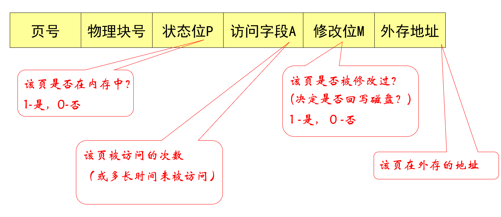 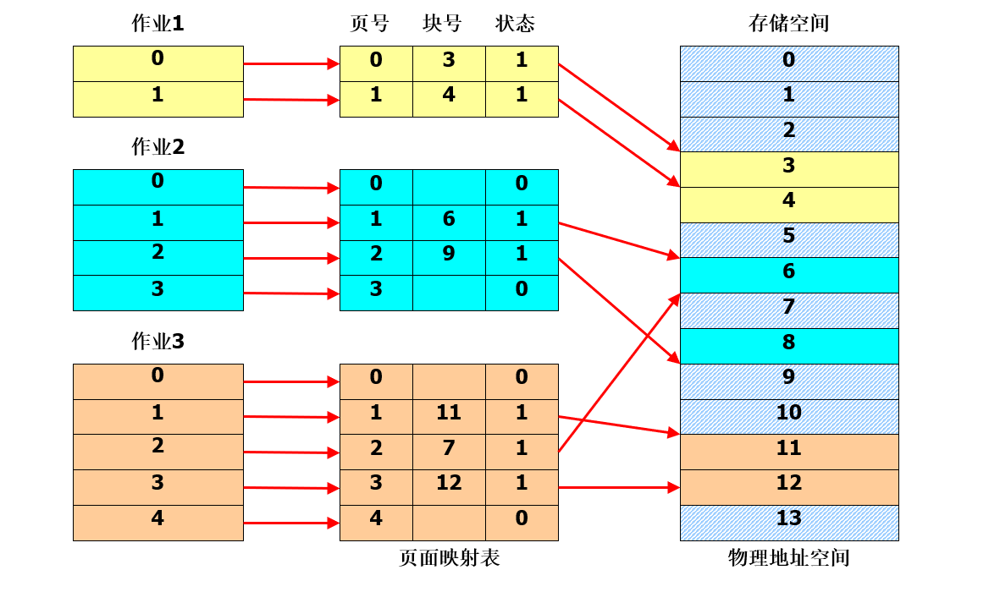
每当访问页不在内存时，便产生缺页中断，请求OS将所缺页调入内存。缺页中断与一般中断有相同点，也有着显著的区别： （1）在指令执行期间产生和处理中断信号。通常，CPU都是在一条指令执行完后，才检查是否有中断请求到达。而缺页中断是在指令执行期间，发现所要访问的指令或数据不在内存时所产生和处理的。 （2）一条指令在执行期间可能产生多次缺页中断。基于这些特征，系统中的硬件机构应能保存多次中断时的状态，并保证最后能返回到中断前产生缺页中断的指令处继续执行。
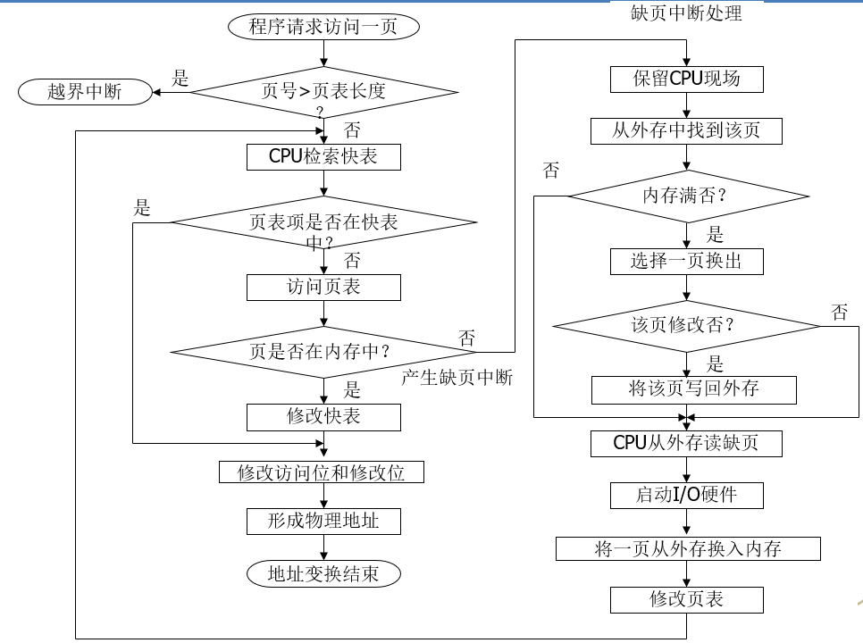
最小物理块数的确定：保证进程正常运行所需的最小物理块数。
物理块的分配策略：
物理块分配算法：
预调页策略：预先调入一些页面到内存 请求调页策略：需要访问的页面不在内存时，调入内存
如系统拥有足够对换区空间，全部从对换区调入所需页面；如缺少足够对换区空间，凡是不会被修改的文件，都直接从文件区调入。
页面调入方法： ①查找所需页在磁盘上的位置； ②查找一内存空闲块：如果有空闲块，就直接使用它；若没有空闲块，使用页面置换算法选择一个“牺牲”内存块；将“牺牲”块的内容写到磁盘上，更新页表和物理块表； ③将所需页读入（新）空闲块，更新页表； ④重启用户进程
缺页率：
页面置换过程
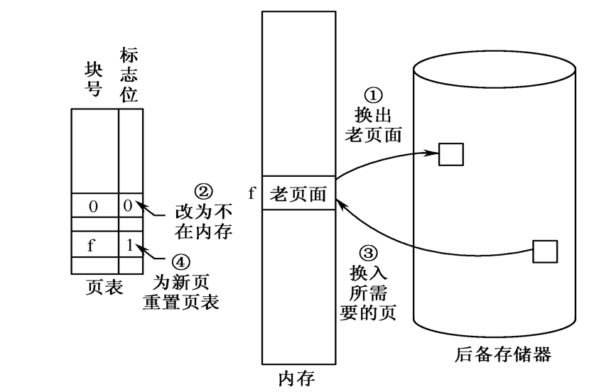
两个问题： （1）置换哪些页面？--未来不再使用的或最近较少使用的页面 （2）如何判断？--在局部性原理下依据过去的统计数据进行预测
具体算法有最佳页面置换算法(OPT,optimal replacement algorithm)、先进先出置换算法(FIFO)、最近最久未使用置换算法(LRU,Least Recently Used)、时钟页面置换算法(Clock)、最近未使用页面淘汰算法(NRU,Not Recently Used)、页面缓冲算法(PBA,page buffering algorithm)
淘汰将来再也不会出现或在最远位置出现的页。OPT算法是一种理想情况，因为实际执行中无法预知页面顺序，故无法实现，但可用作性能评价的依据。
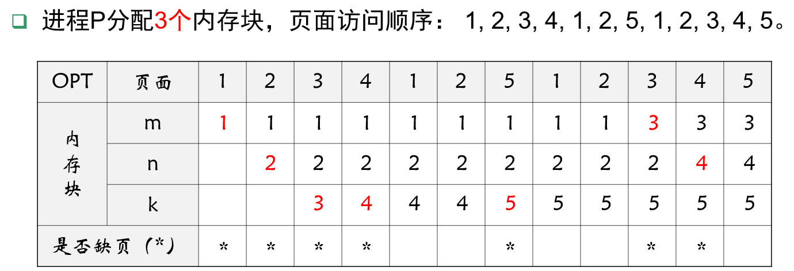 缺页率：7/12=58.3%
淘汰建立时间最早的页面，可以通过链表或队列来表示各页的建立时间先(队首)后(队尾)。
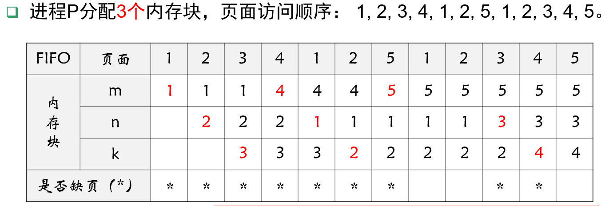 缺页率：9/12=75%
Belady现象：在FIFO算法下，当内存块增加时，反而出现缺页率也增加的异常现象。 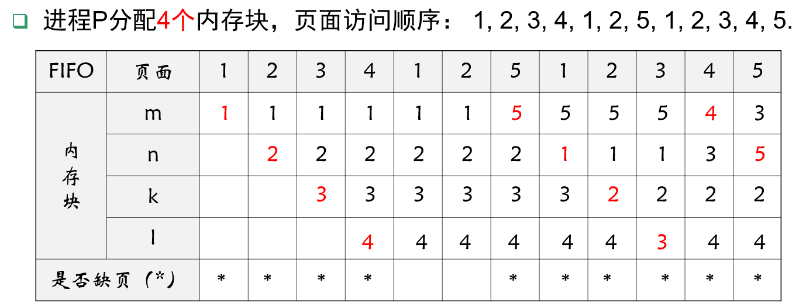缺页率：10/12=83.8%
淘汰最长时间内没有被访问过的页面，利用了局部性原理
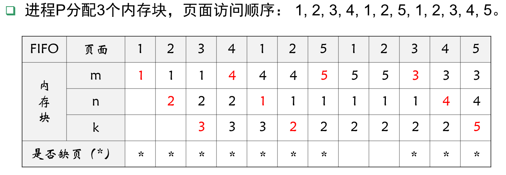
内存有效访问时间（EAT,effective access time)：是指给定逻辑地址找到内存中对应物理地址单元中的数据所用的总时间。
如果一个进程没有足够的页，那么缺页率将很高，这将导致：
抖动（Thrashing）：一个进程的页面经常换入换出
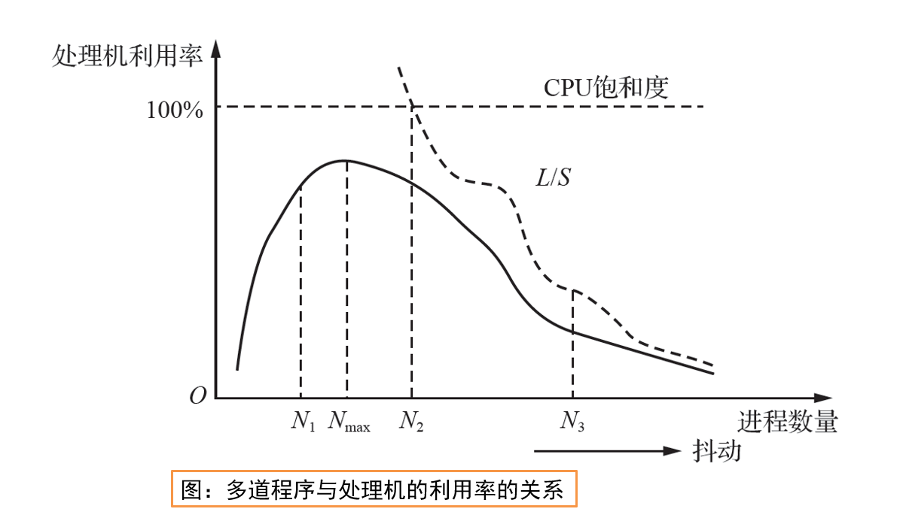
产生抖动的根本原因是，同时在系统中运行的进程太多，由此分配给每一个进程的物理块太少，频繁地出现缺页中断。页面在内存与外存之间频繁调度，以至于调度页面所需时间比进程实际运行的时间还多，此时系统效率急剧下降，甚至导致系统崩溃，这种现象称为“抖动”。
OS要选择一个适当的进程数和置换算法，以在并发水平和缺页（段）率之间达到一个平衡。Denning提出了“工作集”的概念。
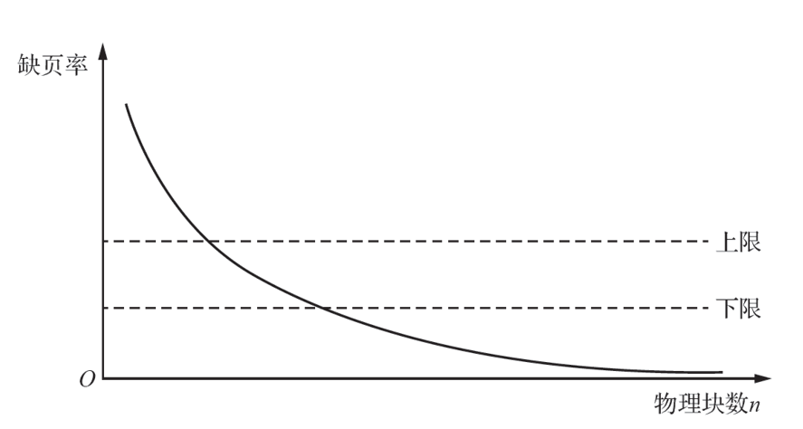
进程发生缺页的时间间隔与所获得的物理块数有关。根据程序运行的局部性原理，如果能够预知某段时间内程序要访问的页面，并将它们预先调入内存，将会大大降低缺页率。
工作集是指在某段时间间隔里，进程实际所要访问页面的集合。Denning指出为了较少产生缺页，应将程序全部工作集装入内存中。然而无法事先预知程序在不同时刻即将访问哪些页面，故仍只有像置换算法那样，用程序的过去某段时间内的行为作为程序在将来某段时间内行为的近似。
在请求分段式存储管理系统中，进程运行之前一部分段装入内存，另外一部分段则装入外存。在进程运行过程中，如果所访问的段不在内存中，则发生缺段中断，进入操作系统，由操作系统进行段的动态调度。
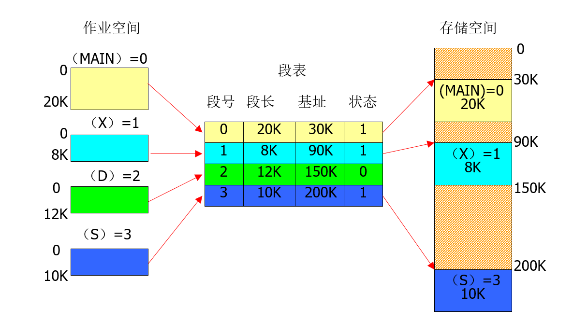
每当发现要访问的段尚未调入内存时，便由缺段中断机构产生缺段中断信号，进入OS后由缺段中断处理程序将所需的段调入内存。
缺段中断机构与缺页中断机构类似：
请求分段的中断处理过程： 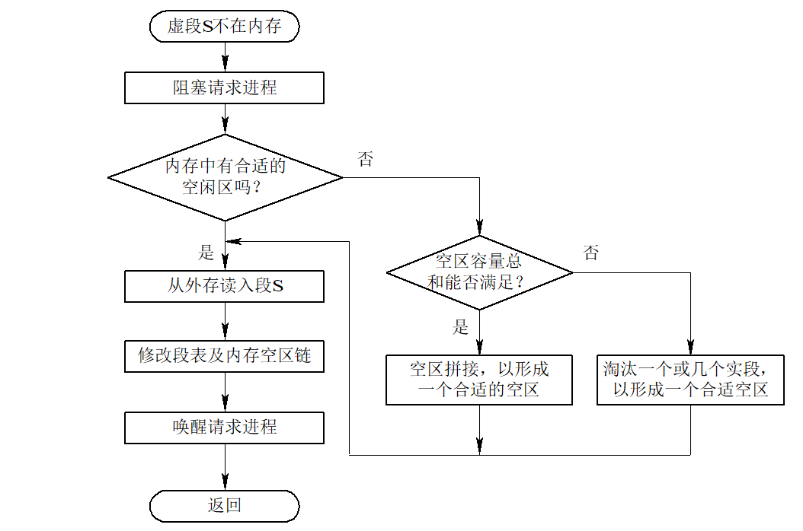